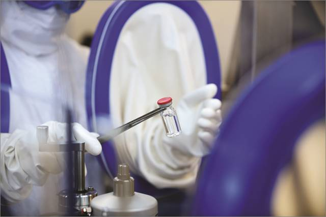
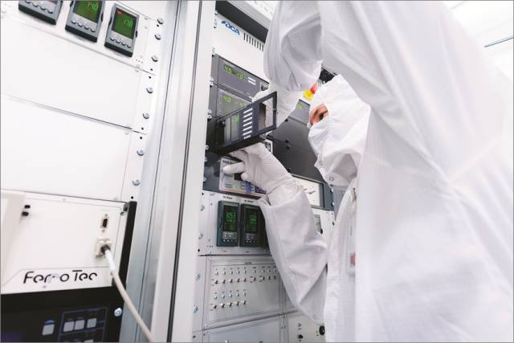
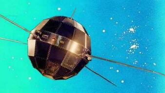
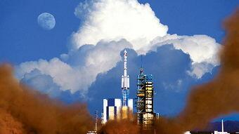
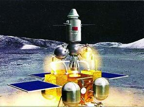

1.传统认为，科学是人类所积累的关于自然、社会、思维的知识体系。2.我们所说的“科学”指研究自然现象及其规律的自然科学；技术泛指根据自然科学原理生产实践经验，为某一实际目的而协同组成的各种工具、设备、技术和工艺体系，但不包括与社会科学相应的技术内容。3.科学与技术是辩证统一体，技术提出课题，科学完成课题，科学是发现，是技术的理论指导；技术是发明，是科学的实际运用。科学的意义：科学技术是第一 生产力。放眼古今中外，人类社会的每一项进步，都伴随着科学技术的进步。尤其是现代科技的突飞猛进，为社会生产力发展和人类的文明开辟了更为广阔的空间，有力地推动了经济和社会的发展。中国的计算机、通讯、 生物医药、 新材料等高科技企业的迅速增长，极大地提高了中国的产业技术水平，促进了工业、农业劳动生产率大幅度提高，有力地带动了整个国民经济的发展。实践证明，高新技术及其产业已经成为当代经济发展的龙头产业。科学技术是人类文明的标志。科学技术的进步和普及，为人类提供了广播、电视、电影、录像、网络等传播思想文化的新手段，使精神文明建设有了新的载体。同时，它对于丰富人们的精神生活科学技术，更新人们的思想观念，破除迷信等具有重要意义。科学技术的进步已经为人类创造了巨大的物质财富和精神财富。随着知识经济时代的到来，科学技术永无止境的发展及其无限的创造力，必定还会继续为人类文明作出更加巨大的贡献。随着现代科学技术知识体系的不断庞大，作为科学技术变化、发展最高理论概括的科学技术哲学（对现代科学技术的能动的反作用日益凸显，现代科学技术日益社会化、体系化和复杂化都使得科学技术必须纳入到哲学的视域中考察，哲学也就自然对科学研究和工程技术实践具有普遍的指导作用，以往的那种把哲学排斥到科学技术之外的观点应该得到更正。科学与技术之间的关系因历史时期而不同，从技术领先到科学领先发展，从技术与科学分离到科学与技术精密结合，现代科技的发展更加使科学的基础研究与技术的应用开发之间的时间缩短，尤其系统科学的诞生，导致了自动化、计算机、通讯技术从科技到产业化的迅速转化，而系统科学应用于生物医学又导致了系统生物学与合成生物学之间偶合，将迅速导致系统医学与系统生物工程的应用，从而导致个体化医学、转化医学与医疗工程化系统的生物医学与生物 工业革命，使科学技术越来越凸显为社会经济发展的 生产力。 现代科技人类的知识将会大大的增长，今天，我们想不到的新发明将会屡屡出现。我有时几乎后悔我出生得过早，不能知道将要发生的一些事情。——本杰明· 富兰克林。高科技就像沟通现实与未来的使者，引导人们不断开拓发展的空间，走向的具有活力的新世界。以信息技术为中心的当代科技革命在全球蓬勃兴起，标志着人类从工业社会向信息社会的历史性跨越。信息技术包括 微电子技术、 光电子技术、计算机技术、通信技术、成像技术、显示技术等。自20世纪90年代以来，信息技术向数字化、高速化、网络化、集成化和智能化迅速发展。它的高速发展及其广泛应用，引导着众多高新技术领域的变革，形成了一幅波澜壮阔的科技创新画面。
基因疗法利用改造过的病毒将相关基因的健康副本递送至携带有缺陷基因的患者体内，修复基因，治愈疾病。然而，至今为止，基因疗法带来的失望远大于希望。1999年，一名18岁的肝病患者杰西·基辛格（JesseGelsinger）在一场基因治疗实验中死亡，从此整个基因疗法领域的发展就开始停滞不前。点评：这项技术非常重要，再困难人类也要坚持下去，因为这是从根本上治愈很多疾病的终极方法。不过还有很长的路要走 
实用的量子计算机点评：这仅仅是炒作概念，中国和美国都一样。虽然Google和IBM号称也在做这方面的研究，但是投入的科研经费占正常研究开发（R&D）经费的比例不到千分之一。从理论上讲，今天的二值计算机和想象中的量子计算机是等价的。 
来看看现代的黑科技吧！
（1）第一个想到利用火箭飞天的人——明朝的万户 14世纪末期，明朝的士大夫万户把47个自制的火箭绑在椅子上，自己坐在椅子上，双手举着大风筝。他最先开始设想利用火箭的推力，飞上天空，然后利用风筝平稳着陆。不幸火箭爆炸，万户也为此献出了宝贵的生命。但他的行为却鼓舞和震撼了人们的内心。促使人们更努力的去钻研。
（2）东方红一号——中国第一颗人造卫星 1970年中国第一颗人造卫星“东方红1号”成功升空！中国航天发展史上第二个里程碑。 
（3）载人航天 2003年10月15日，中国神舟五号载人飞船升空，表明中国掌握载人航天技术，成为中国航天事业发展史上的第三个里程碑。 
（4）升空探测-嫦娥奔月 2007年10月24日18时05分，随着嫦娥一号成功奔月，嫦娥工程顺利完成了一期工程。 
此后，神舟九号与天宫一号相继发射，并成功对接
Ⅰ型胶原是构成正常成人皮肤的主体（成人皮肤胶原I型占80%， III型占 20%），Ⅲ型胶原则是胎儿&婴儿皮肤的主要胶原蛋白（占60%）。Ⅰ型胶原粗大，在体内构成有横纹的粗径原纤维，是瘢痕组织纤维化的物质基础，正是由于伤口愈合中Ⅰ型胶原大量出现使瘢痕结构完全有别于正常的皮肤组织，质地坚硬而没有弹性；相比之下，III型是皮肤中网状纤维的主要部分，含量越高纤维束越细，创伤修复中， Ⅲ型胶原蛋白比例高则皮肤组织细腻柔滑，且III型胶原蛋白正是婴儿皮肤无瘢痕愈合的关键。
胶原蛋白主要由成纤维细胞合成，但对成人而言，成人真皮自身的成纤维细胞只能合成I型胶原，骨髓来源的成纤维细胞则能同时合成I、III型胶原蛋白，这也是人成长过程中Ⅲ型胶原占比下降而Ⅰ型胶原占比不断提升的原因——激光嫩肤核心机理是刺激真皮层成纤维细胞合成胶原，但成人真皮成纤维细胞合成的胶原又主要为相对“坚硬”和缺乏弹性的I型，因而在恢复皮肤弹性角度，激光嫩肤有先天不足，术后需补充III型胶原蛋白。